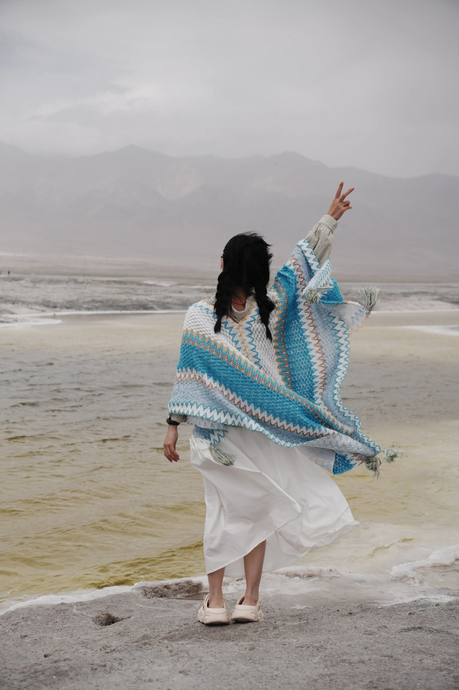

OUR TRAVEL PASSPORT✳
每走一步，
就盖一个章。
点开地点，盖下属于那段旅程的印章。

01 / PLACES WE KEEP
照片是图钉，回忆是坐标。
点击一个地方，看看当时的我们。
地点为城市 / 景区概略位置
正在连接高德地图。
PRESS PLAY / TRAVEL BACK IN TIME
从第一张照片出发。
连线为回忆示意 · 载具由你选择02 / THE MEMORY PLAYGROUND
点开地点，盖下属于那段旅程的印章。
A LITTLE TIME MACHINE
不选目的地，把出发交给运气。
它会从相册里寄来一张明信片。
HOW WELL DO YOU REMEMBER?
五张照片，四个选项。和记忆玩一场捉迷藏。
03 / THE CONTACT SHEET
— 本相册 / — 张照片
从最近的一天，慢慢往回翻。
还没有这段回忆。换个关键词试试？
TO BE CONTINUED